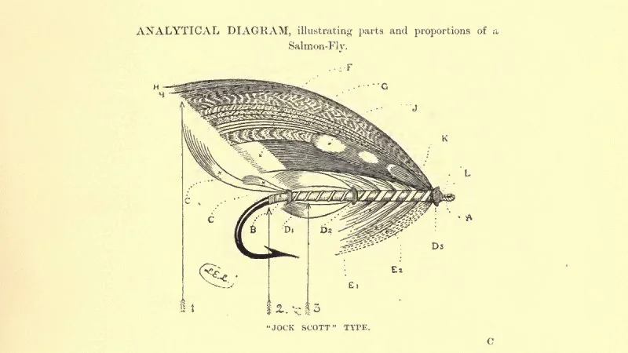

Me at the zoo
the first video ever uploaded to youtube. Internet history.
he Use of Knowledge in Society - Friedrich Hayek
In this paper hayek introduces the knowledge problem or the 'problem of the utilization
of knowledge which is not given to anyone in its totality'.
Different members of society have different knowledge. Decisions should be made
by those with the best information at hand, which is typically not a central government.
Martha's Vineyard Sign Language
In the 18th century there were a great deal of deaf people on Martha's Vineyard, due hereditary deafness in a to a
small population with little turnover As so many people were deaf, both hearing and blind people used sign language.
As such, being deaf was (almost) no hinderance. The situation stopped when migration to the mainland increased in the
19th century, due to tourism and americas school for the deaf opening on the mainland.
Stigler's law
Stigler's law claims that no scientific discovery is named after its original discoverer. Stigler attributed the
discovery of the law to Robert K. Merton, from whom Stigler stole credit so that it would be an example of the law.
Wet bias
Like everyone else, weather forecasters optimize for what they measure. One would assume that they measure forecasting accuracy.
In fact, they measure viewer quotes. A viewer expecting a sunny day who is suprised by rain will be very annoyed, and switch forecaster.
A viewer expecting rain, being suprised by a sunny day (delightful) is much less likely to change forecaster. Therefore, forecasters
developed a 'wet bias', overpredicting the likelyhood of rain.
Citrus Taxonomy
There is a lot more to discover. Use this link to venture past your limited understanding of Citrus Taxonomy
and leave the primitive domain of 'lemon', 'orange' and lime.
History of Ammonia
It might sound boring, but trust me, its a banger. Chilean bird poop, crucial science for WW2 and the worlds biggest company at the time, IG Farben.
Wikipedia
Spurious Scholar by Tyler Vigen
For every spurious correlation with p< 0.05, Vigen makes an LLM write a bogus research paper.
Papers include highlights such as "Say Cheese! An Examination of the Correlation Between American Cheese Consumption
and Patents Granted in the United States" (p<0.01).
Richard Dawkins on Memes at Oxford Union
The term 'meme' was coined in 1976 by a zoologist (great word with 3x 'o') talking about genetics, Richard Dawkins, in 'The Selfish Gene'. Can you imagine!
The feather heist
Guy steals Darwin Finches to make flyfishing flies for collectors of the most extravagant flies. Badass but also plain ass thing to do.
